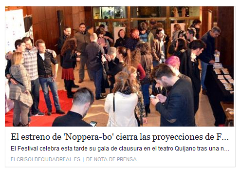
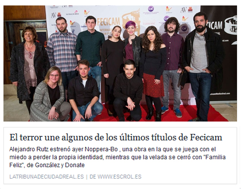
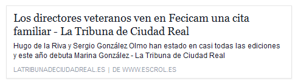

FECICAM '16 | SELECCIÓN OFICIAL
Familia Feliz, Hombres Máquina y Déjalo seleccionados en el FECICAM
Competirán en las categorías de Cortometraje Castilla La Mancha y Videoclip Castilla La Mancha
Un total de 45 propuestas, entre largometrajes, cortos, videoclips, videoartes, documentales y los cortos que forman parte de la sección Babycam, aspiran a conseguir los máximos galardones en la 7ª edición del Festival de Cine de Castilla-La Mancha, FECICAM, que se celebrará entre el 4 y el 17 de marzo y que cuenta con el apoyo de la Academia de las Ciencias y las Artes Cinematográficas de España.
Familia Feliz y Hombres Máquina (dirigido por Marina González para Maternus) competirán en las categorías de Cortometraje Castilla La Mancha y Videoclip Castilla La Mancha respectivamente.
Así mismo, Déjalo, el videoclip de Luces Desenfocadas dirigido por David Sánchez (responsable del sonido de Familia Feliz) y con la colaboración de Sergio Sánchez en producción y logística y de Marina González en la dirección de actores, también opta al Premio a Mejor Videoclip Castilla La Mancha.
La productora Hemocianina ha recibido la noticia con notable entusiasmo, puesto que valoran las selecciones como una estupenda oportunidad de mostrar el trabajo de un nutrido grupo de la localidad, entre técnicos y actores.
EL CRISOL

LA TRIBUNA

